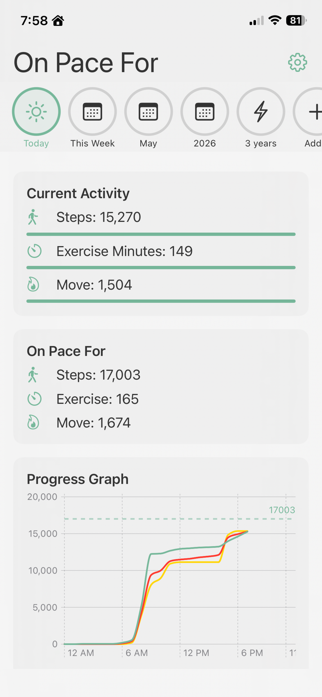

📊 Live Progress Dashboard
See your steps, distance, active calories, and workouts update in real time throughout the day. Beautiful visualizations make it easy to understand your progress at a glance.
- Real-time activity updates from Apple Health
- Clean, intuitive interface
- Quick glance at daily, weekly, and monthly progress
- Automatic sync with HealthKit data
